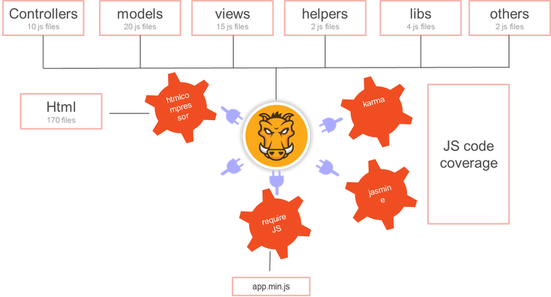
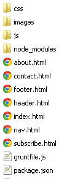

Use case
There are dozens of JS based MVC frameworks in the market to develop front end applications and has its own pros and concerns. We need to prepare lots of JS files to fetch data from services and render it on the pages. The major challenge with this is response time. Most of the site has SLA as 2 seconds max to fetch the data and render it.Let me take an example of my blog www.techjira.com. To build this blog I used below resources.
- Two css files. One css file to design the style of my blog another one is to format the example source code
- Set of JS files. JS files contain two types. One is to handle UI, events and services of my blog and second is third party JS libraries. I used jquery.js, prettify.js and require.js .
- Some static images which are approximately 20kb in size.
The only goal of this use case is load the page as quickly as I set the SLA as 2 seconds.
Challenges
1. As I have too many resources I need to reduce the network calls to load the page.Solution
- Minify the css and JS files as I don't care about comments and spaces for production. These may be helpful for only development
- Compress the image files without disturbing the quality of the images
- Combine set of JS files into one file to reduce the network calls
- Load only necessary resources on the first page and load rest of resources after page load
- Use the single page navigation instead of page reload while navigating pages
See below diagram which explains the goal of use case.

Implementation
In above solution nothing to do with grunt for last point. I used my own technique for this.
I used below Grunt plugins to achieve the goal.
- grunt-contrib-requirejs - to minify and compress the css and JS code and concat the JS files.
- grunt-contrib-imagemin - to minify the images
- grunt-contrib-watch - to monitor the resources
- grunt-htmlcompressor - to remove the minify the HTML files
- grunt-grunt-remove-logging - to remove console logs from JS files
- grunt-contrib-copy - to copy the some resources to specified location
- grunt-contrib-clean - to clean up some of resources which are not required for production
Let's start the implementation,
- My project root folder looks like below

js floder contains bounch of javascript files like handlers, models, views, utilities and other stuff.
- Create package.json in the project root directory and add the metadata. My package.json looks like
below.
{ "name": "Techjira", "version": "0.1.0", "devDependencies": { } } - Open command prompt and go to the project root directory.
Assuming you already installed npm and grunt-cli. If not yet done go to How to install grunt section and finish the installation first.
- Now I need to add the grunt and plugin information. Run below commands one by one to add the meta data information
in package.json
$npm install grunt --save-dev $npm install grunt-contrib-requirejs --save-dev $npm install grunt-htmlcompressor --save-dev $npm install grunt-contrib-imagemin --save-dev $npm install grunt-contrib-watch --save-dev $npm install grunt-grunt-remove-logging --save-dev $npm install grunt-contrib-copy --save-dev $npm install grunt-contrib-clean--save-dev
Above commands will install the plug-ins and add the entry in package.json devDependency. Now package.json looks like below
{ "name": "Techjira", "version": "0.1.0", "destination":"/wamp/www/techjira", "devDependencies": { "grunt": "^0.4.5", "grunt-contrib-clean": "^0.6.0", "grunt-contrib-copy": "^0.7.0", "grunt-contrib-imagemin": "^0.9.2", "grunt-contrib-requirejs": "^0.4.4", "grunt-contrib-watch": "^0.6.1", "grunt-htmlcompressor": "^0.1.10", "grunt-remove-logging": "^0.2.0" } }We can define our own properies in package.json file. In above code destination attribute is my own property and I use this property to copy all required files into this folder. - Create gruntfile.js in project root directory and copy below code.
//wrapper method start module.exports = function(grunt) { //config section start grunt.initConfig({ pkg: grunt.file.readJSON('package.json'), requirejs: { compile: { options: { baseUrl: "js", preserveLicenseComments: false, allowSourceOverwrites:true, modules:[{ name:"app.min", create:true, include:["main.js","handler.js","views.js","util.js","overlay.js","handler/header","handler/footer","handler/overlay","handler/nav","lib/prettify.js"] }], dir:"<%=pkg.destination%>/js" } } }, htmlcompressor: { compile: { files: [{ // Dictionary of files expand: true, src: ['**/*.html','*.php','!node_modules/**'], dest: '<%=pkg.destination%>' }], options: { type: 'html', preserveServerScript: true } } }, removelogging: { dist: { src: "<%=pkg.destination%>/js/**/*.js", } }, clean: { js: ["<%=pkg.destination%>/js/*.js", "!<%=pkg.destination%>/js/*.min.js"] }, copy: { main: { files: [ // includes files within path {expand: true, src: ['css/*','images/**','js/lib/**',"*.php"], dest: '<%=pkg.destination%>/'} ] } }, watch: { scripts: { files: ['**/*.*','*.*'], tasks: ['htmlcompressor','requirejs', 'removelogging','clean','copy'], options: { spawn: false, } } } }); //config section end //load task or plugin grunt.loadNpmTasks('grunt-contrib-requirejs'); grunt.loadNpmTasks('grunt-htmlcompressor'); grunt.loadNpmTasks("grunt-remove-logging"); grunt.loadNpmTasks('grunt-contrib-clean'); grunt.loadNpmTasks('grunt-contrib-watch'); grunt.loadNpmTasks('grunt-contrib-copy'); //register tasks grunt.registerTask('default', ['htmlcompressor','removelogging','requirejs','clean','copy']); }; //Wrapper method end
Grunt API support various functionalities. In Line 5, I am reading package.json file and keeping the data in pky attribute as a object. I can you this attribute to get the properties of package.json.
Please note, I added grunt.js logic as simple as possible. So that i can use as many plug-ins as possible and understand it easy. This script can be optimized better and let see how much you can do :)